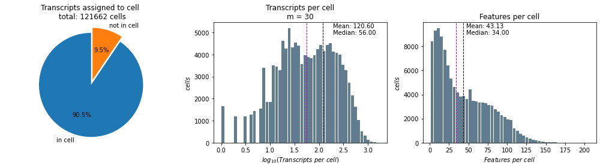

import pandas as pd
import numpy as np
from matplotlib import pyplot as pltgeopandas.GeoSeries(Compare the different segmentation runs
If you tried Baysor with various settings, you can compare the runs here.
In our first experiment, we tested many mol_per_cell settings. In the later runs, we just took 30 since this seems to be a good value.
versions = [30]def diagnostic_plots(transcripts, title, ax1, ax2, ax3):
# how many transcripts are assigned to a cell
transcript_in_cell = (transcripts.cell > 0).value_counts()
ax1.pie(transcript_in_cell, explode=[0.1, 0], labels=['in cell', 'not in cell'],
autopct='%1.1f%%',
startangle=90)
ax1.axis('equal') # to make a circle
ax1.set_title(f"Transcripts assigned to cell \n total: {np.max(transcripts.cell)} cells")
# how many transcripts per cell
transcripts_per_cell = transcripts[transcripts.cell > 0].groupby("cell").size()
ax2.hist(np.log10(transcripts_per_cell), bins=50, rwidth=0.9,color='#607c8e')
add_mean_and_median(transcripts_per_cell, ax2, fn = lambda x:np.log10(x))
ax2.set_xlabel(r"$log_{10}(Transcripts\ per\ cell)$")
ax2.set_ylabel(r"$cells$")
ax2.set_title(f"Transcripts per cell\nm = {title}")
# np.log10(transcripts[transcripts.cell > 0].groupby("cell").size()).plot.hist(grid=True, bins=50, rwidth=0.9,color='#607c8e')
# how many features per cell
features_per_cell = transcripts[transcripts.cell > 0].groupby("cell")['gene'].nunique()
ax3.hist(features_per_cell, bins=50, rwidth=0.9,color='#607c8e')
add_mean_and_median(features_per_cell, ax3)
ax3.set_xlabel(r"$Features\ per\ cell$")
ax3.set_ylabel(r"$cells$")
ax3.set_title("Features per cell")
return(ax1, ax2, ax3)
def add_mean_and_median(values, ax, fn = lambda x:x):
mean = values.mean()
median = values.median()
ax.axvline(fn(mean), color='k', linestyle='dashed', linewidth=1)
ax.axvline(fn(median), color='m', linestyle='dashed', linewidth=1)
min_ylim, max_ylim = ax.get_ylim()
xpos = max(fn(mean)*1.1, fn(median)*1.1)
ax.text(xpos, max_ylim*0.9, 'Mean: {:.2f}\nMedian: {:.2f}'.format(mean, median))nrows = len(versions)
fig = plt.figure(figsize = (14,4*nrows))
for i in range(nrows):
v = versions[i]
print(f">>> making plots for m = {v}")
ax1 = fig.add_subplot(nrows,3,1+i*3)
ax2 = fig.add_subplot(nrows,3,2+i*3)
ax3 = fig.add_subplot(nrows,3,3+i*3)
transcripts = pd.read_csv("baysor_"+str(v)+"_mol_per_cell/segmentation.csv")
ax1, ax3, ax3 = diagnostic_plots(transcripts, v, ax1, ax2, ax3)
fig.tight_layout(h_pad=1.1)
fig.savefig('07_diagnostic_plots.jpg', dpi = 100)
>>> making plots for m = 30